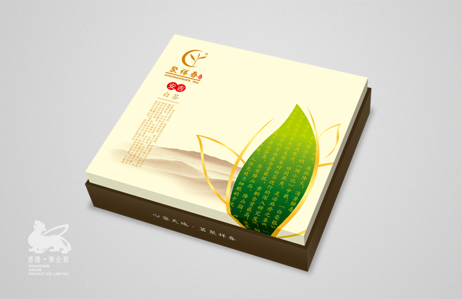
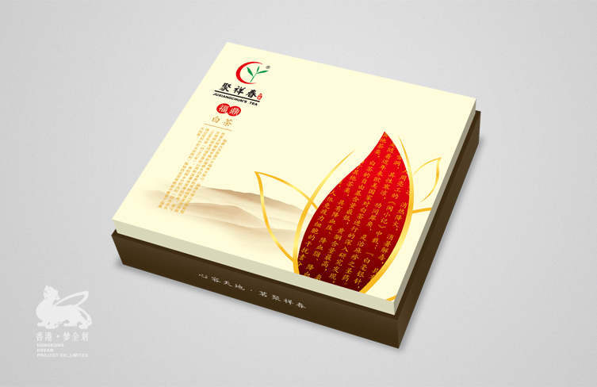
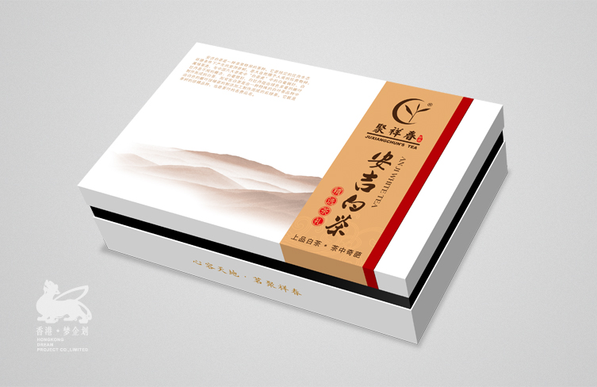
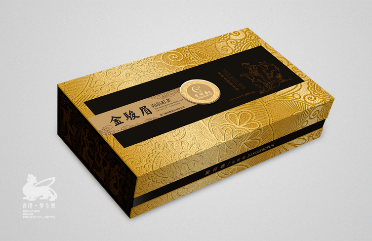

公司背景
聚祥春，线下著名茶叶包装企业，从事多种类型礼盒的开发制作，具有很高的口碑和知名度。茶礼的需求是市场上一直以来的热销点，
但是，如何抓住市场的主流抓住现代人送礼的需求成为了聚祥春发展上最为重要的一个环节，
2012年初，通过洽谈了解一拍即合达成长期战略合作。
市场通用包装规划设计
通过我司市场调研组对市场的长期跟踪，我们抓住近年市场的流行风向。在设计上刨除个人和企业的审美，而是迎合整个市场的审美观点，
包括实用性性能，送礼美观大方，高贵时尚等等，在色调和选材上也费尽心思的与现今的主流、热门搭配起来。
如今聚祥春的市场包装，依旧有很大一部分由我司全权负责开发，形成最深的合作伙伴。
服务内容
1、茶叶包装市场定向分析
2、市场需求及人群审美分析
3、产品及包装设计及营销开发
4、CRM老顾客维护系统开发
   